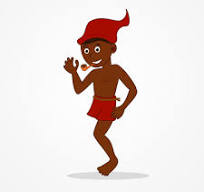
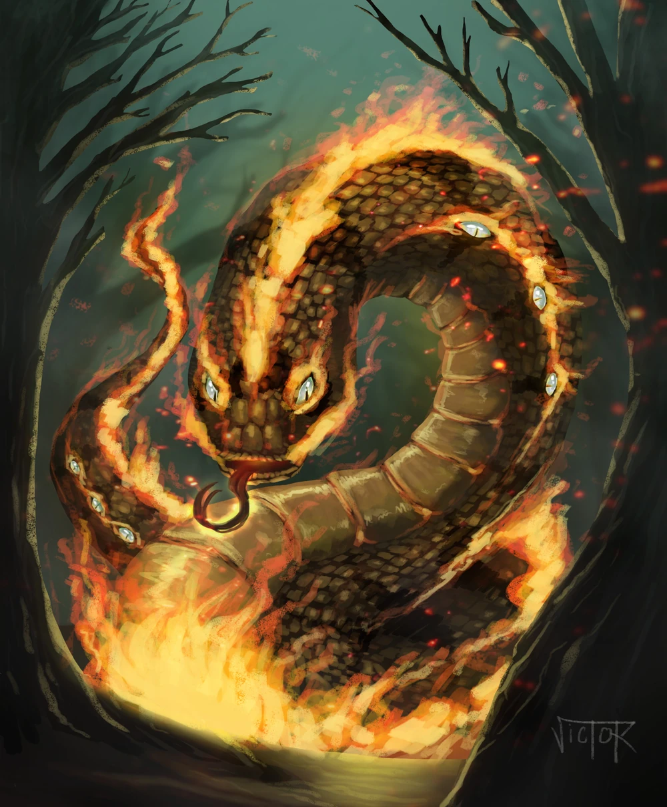
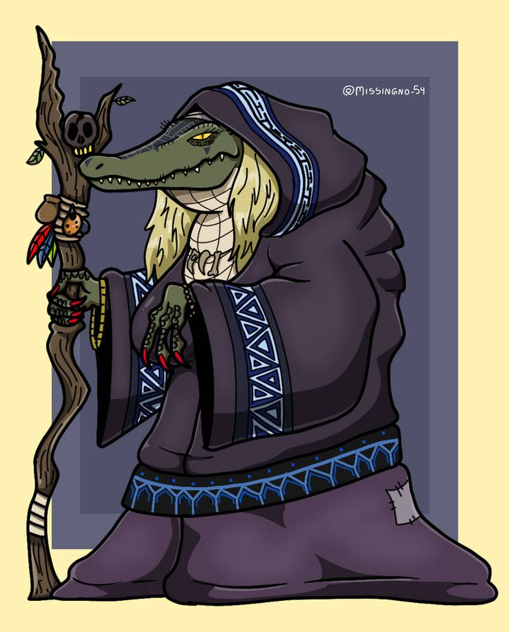

Lendas e mitos do Folclore
Descubra as lendas e mitos mais incriveis do folclore brasileiro!
Saci-Pererê
O Saci é um ser travesso, famoso por seus truques, ter uma perna só, seu barrete vermelho e por fumar um cachimbo. Ele adora fazer bagunça e pregar peças nas pessoas.
Ele tem influencia tanto indigena, africana e europeia, teorias dizem que ele era um mito de origem indigena, sendo associado a outras lendas, como o da matinta pereira, além de que em alguns mitos ele é dito ser capaz de se tornar um passaro de mesmo nome. Entretanto com os escravos africanos vindo para o Brasil ele acabou por ganhar caracteristicas deles, como sendo retratado majoritariamente como de pele negra. Os europeus também influenciaram ele, tendo como caracteristica o seu capus vermelho, ou barrete, que é encontrado em lendas europeias sobre duendes e anões.
Curupira
Guardião das florestas, o Curupira protege a natureza e pune aqueles que desrespeitam a fauna e flora.
Curupira é conhecido por seus pés virados para trás, o que dificulta a perseguição por caçadores. Também é avistado montado em um porco, que o leva por aí o ajudando a proteger a floresta. Ele faz um assobio bem auto e pode encantar caçadores para se perderem nas matas, ou então se transformando em algum animal para atrair os caçadores e depois sumir, fazendo eles ficarem perdidos, protegendo assim a natureza. Pode ser as vezes representando com habilidades de fogo, mas ele se aproxima mais de tecnicas de ilusão, metamorfose e magia.

Iara
Conhecida como a "Mãe d'Água", "Senhora d'Água" a Iara é uma sereia que encanta os pescadores com sua beleza e canto hipnotizante e os leva para a água, onde eles se afogam e ela os devora.
Ela também é a protetora dos rios, ajudando peixes a escaparem de armadilhas de pescadores e caçadores. Em algumas historias ela possui o controle sobre a água, podendo a controlar, como visto na lenda do Barba-ruiva, onde ao saber que a mãe de um bebe o jogou no rio, ela em um estado de furia aumentou o fluxo de água e fez o pequeno rio virar uma grande lágoa, inundando a casa da do bebe junto.
Sua origem é incerta mas teorias dizem que ela foi trazida pelos europeus e com o tempo, se mesclou a cultura indigena e ganhando suas propriedades.
Boitatá
Uma cobra de fogo que protege a floresta contra quem a destrói. Diz-se que o Boitatá persegue principalmente aqueles que provocam incêndios. Ele dorme em rios ou lagos, sem que sua chama se apague nunca.
A lenda do Boitatá tem origem indígena e o termo vem da língua Tupi-Guarani, onde mboi significa "cobra" e tata significa "fogo". O primeiro registro da lenda foi feito pelo padre jesuíta José de Anchieta em 1560, que o descreveu como um "facho cintilante" que matava os indígenas.
Em uma versão biblica é dito que ela era uma cobra comum, mas um diluvio aconteceu a muito tempo e somente ela era capaz de nadar. Por saber nadar ela sobreviveu ao diluvio se alimentando dos olhos dos outros animais mortos que não puderam escapar. Nos olhos desses animais estava a visão da ultima vez em que viram a luz do sol, fazendo assim com que o boitatá fosse ficando iluminado a cada olho que comia, até que quando o diluvio passou ela já estava completamente difente, sendo parecida com sua versão brilhante e protetora da natureza.
Segundo alguns nordestinos, o boitatá, conhecido como "Alma dos Compadres e das Comadres", representa as almas penadas malignas que passam queimando tudo. Há ainda uma versão em que ele é um grande touro que cospe fogo pela boca.
Mula-sem-Cabeça
A mula sem cabeça é uma lenda presente no folclore brasileiro, sendo conhecida por outros nomes também: burrinha de padre e burrinha. Essa lenda não está presente só no Brasil, mas em diversos países da América Latina.
Na versão brasileira, narra-se da história de uma mulher que se transforma em uma mula com labaredas no lugar da cabeça por ter cometido algum ato sexual com um padre ou por ter feito algo terrivel e foi amaldiçoada, ou foi a sétima filha de uma familia, ou foi amaldiçoada por uma bruxa. Por isso ela pode ser parente de um lobisomem ou uma bruxa, ou os dois, pois eles podem ser criados ou nascerem pelos mesmos métodos.
Não é somente a mulher que sofre, em algumas variações é dito que o padre que também praticou atos sexuais com a mulher vai receber sua punição em morte, podendo se tornar um cavalo sem cabeça.
Por mais que seu nome seja mula sem cabeça em algumas regiões do Brasil, em algumas variações ela pode ter uma cabeça em chamas.
Ela é mulher amaldiçoada com essa condição torna-se mula sem cabeça em uma virada de quinta-feira para sexta-feira e permanece nessa condição até o cantar do galo (existem versões que dizem sobre até o terceiro cantar do galo). Assim, a mulher assume a forma assustadora de uma mula que pode ser toda negra, com labaredas no lugar da cabeça, fogo na cauda e um relinchar assustador que pode ser confundido com um lamento de dor. Ainda dizem que ela precisa passar sete vilarejos, ou cemitérios antes do cantar do galo.
É dito que é nescessário esconder as unhas e os dentes da mula sem cabeça quando ela passa, pois ela os devorara se ver seu brilho. métodos de como a derrotar são: a ferir com algum objeto pontiagudo até ela derramar sangue, ser amaldiçoada por um padre sete vezes antes da missa, ou então para a desencantala é preciso retirar os freios de sua boca.

Boto Cor-de-Rosa
O Boto é um golfinho encantador que se transforma em homem para conquistar mulheres nas festas ribeirinhas. Uma festa que ele gosta muito é a de São João, onde ele vai atrás da mulher mais bonita da festa para dançar, depois de passar a noite com ela, ele desaparece a deixando grávida, por isso muitas crianças que não se sabe quem é o pai, se diz que ela é filha do boto.
Sua historia também é uma alusão a casos de abuso, podendo acontecer dentro da familia, ou com qualquer relacionamento que alguma moça possa ter, sendo usado dessa lenda para esconder quem pode ser o pai.

Cuca
Uma bruxa que veio de influencia dos europeus e indigenas, assustadora que rouba crianças desobedientes. Sua figura é lembrada em canções de ninar e contos folclóricos, como a música:"Nana neném que cuca vem pegar, papai foi pra roça e mamãe foi trabalhar".
Essa musica tem diferenças em cada região, podendo dizer que o pai foi trabalhar ou foi pra fazenda, ou com a mãe que foi para a roça.
Ela assim como muitas outras bruxas pode fazer feitiços e poções, além de proferir encantamentos.
Lobisomem
Um homem amaldiçoado que se transforma em um monstro nas noites de lua cheia, espalhando medo pelos vilarejos.
Ele pode ser o sétimo, sexto ou oitavo filho de uma familia de 6 outros meninos, ou 6 meninas, ou os dois, podendo ser o filho caçula, o mais velho ou o do meio conforme algumas versões.
É desconhecido por muitos brasileiros, mas o lobisomem do Brasil quando dá meia noite, ele sai e sua casa e vai até um chqueiro ou encruzilhada, onde ele tira toda sua roupa, da 7 nós em cada uma, rola no chão onde passou algum animal sete vezes para a esquerda e direita, podendo sair dela transformado em um ser que adota as caracteristicas dos animais que estavam nesse chão.
Ele é muito conhecido por sua forma de lobo, muito por causa da cultura lieraria e depois a cultura pop, que são majoritariamente vindos dos Estados Unidos e a Europa, onde são encontrados lobos para a associação de sua transformação. Entretanto no Brasil ele pode adotrar formas de porco, um cão, um cão com orelhas muito grandes que tocam o chão e quando corre fazem grande barulho, um cavalo, boi, ou uma mistura deles dependendo de qual animal rolou no chão em que o amaldiçoado rolou. Além disse existe o lobisomem branco, que é uma versão em que o homem morre mas a fera continua, adotando uma cor pálida e sendo muito mais agressivo do que antes.